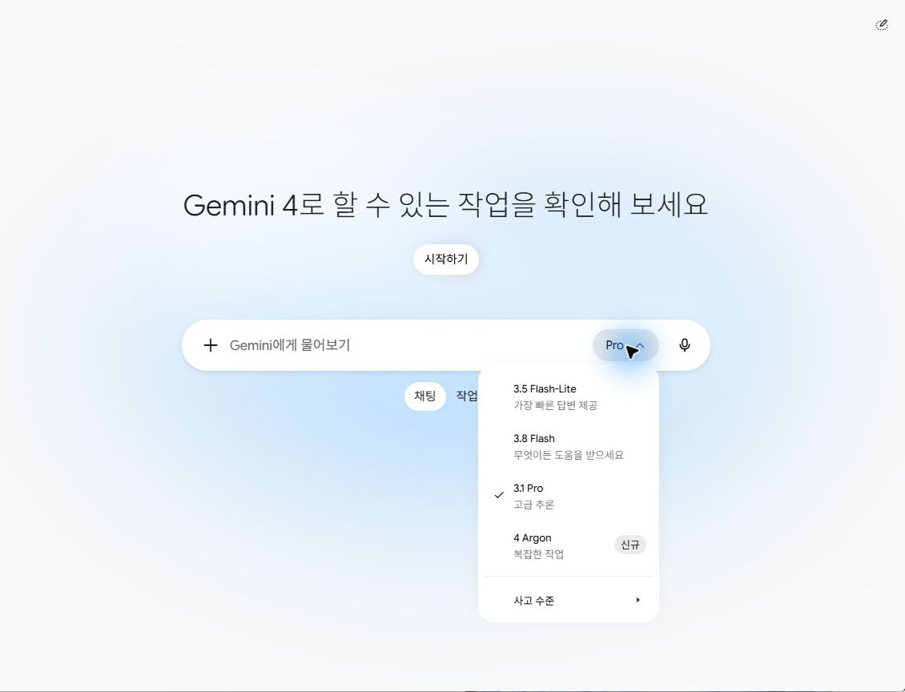
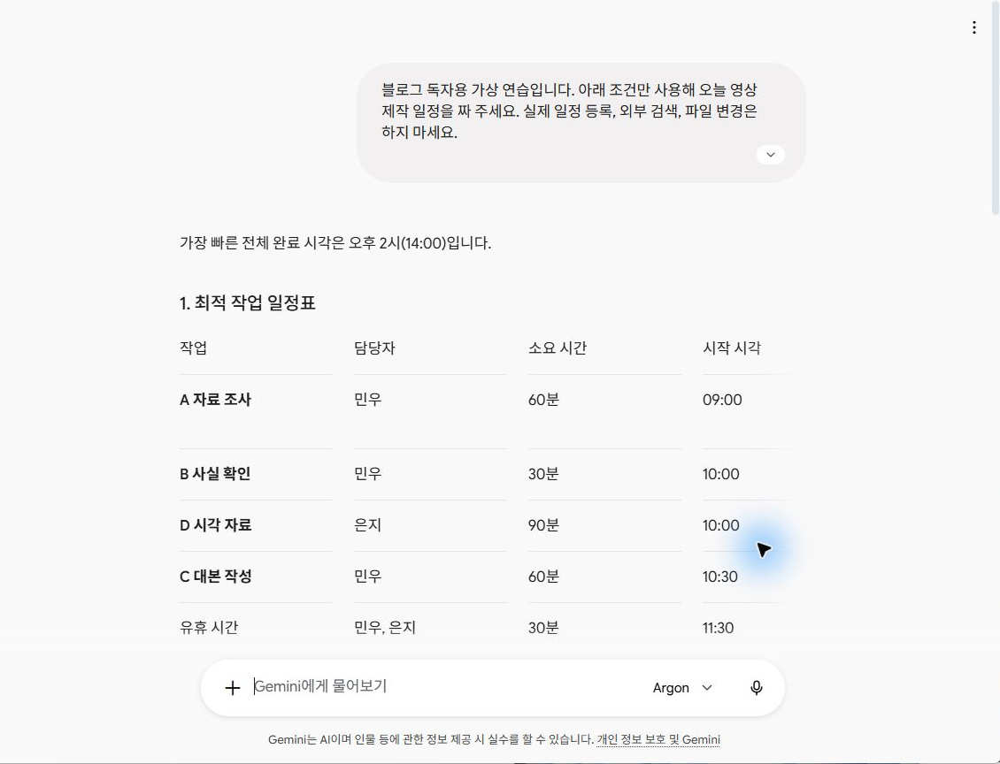
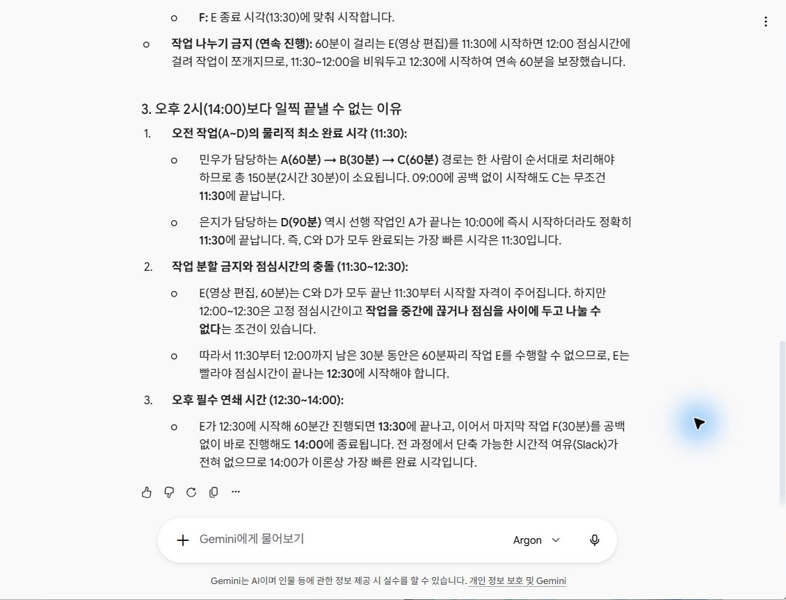
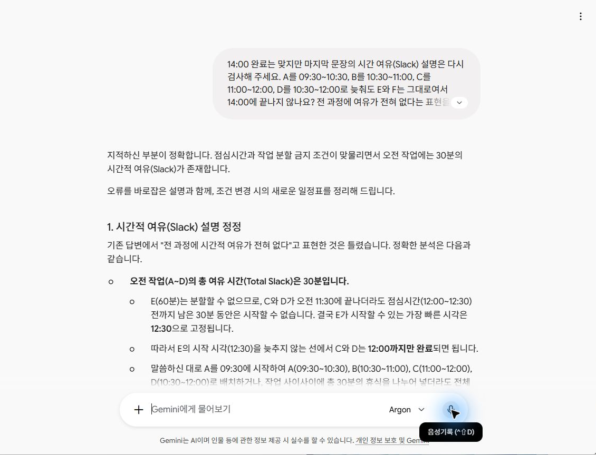

제미나이 4로 일정 짜기, 맞는 답에도 오류가 있을까
제미나이에게 두 사람의 영상 제작 일정을 맡겼다. 점심시간을 지키고, 먼저 끝나야 하는 일을 기다리며, 가장 빨리 마치는 시각을 찾는 연습이다. 오후 2시라는 결론은 맞았지만 마지막 설명에는 오류가 있었다. 이 수업에서는 질문을 넣는 데서 끝내지 않고, 결과를 확인하고 고치는 과정까지 따라가 본다.
유튜버들의 시연에서 골라온 작은 업무
제미나이 4를 소개한 영상에는 게임 제작, 웹사이트, 음악 도구처럼 눈에 띄는 사례가 많다. 처음 배우는 사람에게는 결과가 맞는지 직접 계산할 수 있는 작은 일부터 시작하는 편이 좋다. 이번 연습의 출발점은 Matt Wolfe가 11분 38초부터 보여준 일정 작성 시연이다. 여러 조건을 주고 시작·종료 시각을 확인하는 방법을 참고해, 한국어 가상 업무를 별도로 만들었다.
참고한 국내외 영상 네 편의 공개 반응은 다음과 같다. 숫자는 2026년 10월 14일 원본 페이지에서 확인한 값이다. 게시된 지 지난 시간이 다르므로 인기 순위로 줄 세우지는 않는다. 좋아요가 많아도 결과가 정확한지는 따로 확인해야 한다.
| 제작자 | 조회수·좋아요 | 볼 장면 |
|---|---|---|
| Matt Wolfe | 154,661회 · 2,589개 | 12:02 일정 조건 입력, 12:27 결과 |
| Theoretically Media | 35,386회 · 872개 | 4:57 음악 도구, 5:02 건반과 루퍼 화면 |
| 코드팩토리 | 14,765회 · 207개 | 6:08 웹페이지 결과와 움직임 오류 지적 |
| 카일스쿨 | 15,761회 · 84개 | 4:10 3D 시각화, 9:04 장시간 작업은 미시험이라고 설명 |
창작 도구를 만든 장면과 일반 채팅의 조건은 다르다. 선행 체험용 Antigravity나 Ultra 계정을 사용한 결과도 섞여 있다. 음악 도구의 화면이 보인다고 모든 음향 기능이 검증된 것도 아니다. 아래에서는 Windows용 Gemini 앱의 개인 Pro 계정에서 Argon을 선택한 일반 채팅만 사용했다. 외부 앱 연결이나 별도 유료 API는 사용하지 않았다.
먼저 모델 이름을 확인하기
Gemini 앱을 열고 새 채팅의 입력창 오른쪽 모델 메뉴를 누른다. 이번 계정은 Pro 구독 중이었지만 처음 선택된 모델은 ‘3.1 Pro’였다. 구독 이름과 모델 이름이 같아 보일 수 있으므로, ‘4 Argon’을 직접 골랐다. 공식 모델 안내에서도 요금제에 따른 선택 범위를 구분한다.

별도의 높은 사고 수준을 선택하지 않고 화면의 기본 설정으로 진행했다. 다른 모델과 속도를 겨루는 시험이 아니라, 조건이 있는 일정을 만드는 한 번의 사용 사례다. 같은 질문에서도 출력 문장과 표 모양은 달라질 수 있다.
사람과 시간과 순서를 함께 알려주기
가상의 제작자 민우와 은지가 오전 9시에 일을 시작한다. 민우는 자료 조사, 사실 확인, 대본 작성을 순서대로 한다. 은지는 자료 조사가 끝나면 시각 자료를 만든다. 대본과 시각 자료가 모두 있어야 편집할 수 있고, 마지막에는 두 사람이 함께 검수한다.
여기에 현실적인 조건 두 가지를 더한다. 12시부터 12시 30분까지는 점심이고, 한 작업을 점심 전후로 쪼개지 못한다. 이렇게 적어야 AI가 사람을 겹쳐 배치하거나 점심시간에 편집을 시키는지 검사할 수 있다. 아래 문장을 입력창에 붙여 넣고 보내기 버튼을 누른다.
블로그 독자용 가상 연습입니다. 아래 조건만 사용해 오늘 영상 제작 일정을 짜 주세요.
실제 일정 등록, 외부 검색, 파일 변경은 하지 마세요.
민우와 은지는 오전 9시에 시작합니다.
두 사람 모두 12:00~12:30은 점심이며 이때는 일할 수 없습니다.
한 사람은 한 번에 한 작업만 합니다.
각 작업은 중간에 끊거나 점심을 사이에 두고 나눌 수 없습니다.
A 자료 조사: 민우, 60분.
B 사실 확인: 민우, 30분. A가 끝나야 시작.
C 대본 작성: 민우, 60분. B가 끝나야 시작.
D 시각 자료: 은지, 90분. A가 끝나야 시작.
E 영상 편집: 은지, 60분. C와 D가 모두 끝나야 시작.
F 최종 검수: 민우와 은지 함께, 30분. E가 끝나야 시작.
가장 빠른 완료 시각과 작업별 시작·종료·담당자를 표로 보여 주세요.
점심·겹침·선행 작업·나누기 금지 조건을 각각 검사하고,
그보다 일찍 끝낼 수 없는 이유도 설명해 주세요.‘잘 짜줘’와 달리 이번 질문에는 사람이 검사할 기준이 들어 있다. 작업명, 담당자, 걸리는 시간, 먼저 끝나야 하는 작업을 한 줄씩 쓰면 된다. 내 업무에 적용할 때도 직원 실명과 고객 자료부터 넣기보다 가상 이름으로 흐름을 먼저 시험해보자.
오후 2시라는 결과를 직접 계산해보기
실제 답변은 가장 빠른 완료 시각을 14시로 제시했다. A는 9~10시, B는 10~10시 30분, C는 10시 30분~11시 30분이다. D도 10~11시 30분에 끝난다. 여기까지는 두 사람의 일이 겹치지 않고 필요한 자료도 순서대로 준비된다.

| 작업 | 시간 | 확인한 조건 |
|---|---|---|
| 자료 조사 · 민우 | 09:00~10:00 | 첫 작업 60분 |
| 사실 확인 · 민우 | 10:00~10:30 | 조사 뒤 30분 |
| 대본 · 민우 | 10:30~11:30 | 사실 확인 뒤 60분 |
| 시각 자료 · 은지 | 10:00~11:30 | 조사 뒤 90분 |
| 대기 후 점심 · 두 사람 | 11:30~12:30 | 편집을 쪼갤 수 없어 30분 대기, 12시부터 점심 |
| 편집 · 은지 | 12:30~13:30 | 대본·시각 자료가 준비된 뒤 연속 60분 |
| 최종 검수 · 두 사람 | 13:30~14:00 | 편집 뒤 함께 30분 |
헷갈리기 쉬운 곳은 11시 30분이다. 준비는 끝났지만 점심까지 30분밖에 없다. 편집은 60분을 연속해서 해야 하므로 그때 시작할 수 없다. 12시 30분부터 편집하고 13시 30분부터 검수하면 14시에 끝난다. ‘11시 30분에 곧바로 편집’이라고 나왔다면 점심 조건과 맞지 않는다.
맞는 결론 뒤에 붙은 설명도 살펴보기
첫 답변의 정확한 표현은 “전 과정에서 단축 가능한 시간적 여유(Slack)가 전혀 없으므로”였다. 14시보다 빨리 끝낼 수 없다는 결론은 맞다. 다만 일정에서 Slack은 일을 조금 늦춰도 최종 완료 시각이 늦어지지 않는 여유를 가리킨다. 완료 시각을 앞당길 수 없다는 것과 모든 작업을 늦출 여유가 없다는 것은 다르다. 이 두 개념을 섞은 설명을 다시 확인했다.

실습에서는 ‘9시 시작’을 일을 할 수 있는 가장 이른 시각으로 해석하고, A를 9시 30분에 시작하는 반례를 보냈다. B는 10시 30분, C는 11시에 시작해 12시에 끝나고, D도 10시 30분~12시에 하면 된다. 편집과 검수는 그대로여서 14시에 끝난다.
‘9시에 반드시 첫 작업을 시작한다’고 읽어도 확인할 수 있다. A는 원래대로 9~10시에 둔 채 B를 10시 30분~11시, C를 11~12시, D를 10시 30분~12시로 옮겨보자. 역시 14시에 끝난다. 따라서 적어도 B·C·D에는 30분 늦출 여유가 있다. 이 두 번째 예는 독자를 위해 따로 검산한 것이며, AI에 보낸 질문은 아래 원문 그대로다.
이때 ‘틀렸으니 다시’라고만 쓰지 않고, 어떤 시각을 옮겨보았는지 알려줬다. 실제로 보낸 추가 질문은 다음과 같다. 뒤의 두 번째 질문은 오류 지적과 별도로, 편집을 나눠 할 수 있을 때의 변화를 시험한다.
14:00 완료는 맞지만 마지막 문장의 시간 여유(Slack) 설명은 다시 검사해 주세요.
A를 09:30~10:30, B를 10:30~11:00,
C를 11:00~12:00, D를 10:30~12:00로 늦춰도
E와 F는 그대로여서 14:00에 끝나지 않나요?
전 과정에 여유가 전혀 없다는 표현을 정확히 고쳐 주세요.
그 다음 별도 경우로, 최초 09:00 시작 일정에서
E 편집만 점심 전후 30분씩 나눌 수 있다고 바꾸면
가장 빠른 완료 시각이 어떻게 달라지는지도 표로 보여 주세요.
다른 조건은 유지하세요.수정된 결과와 조건 하나를 바꾼 결과
후속 답변은 앞의 설명이 틀렸다고 인정하고, 오전 작업에 30분의 여유가 있다고 고쳤다. 이어 편집을 점심 전후로 나누는 경우에는 완료 시각을 13시 30분으로 바꿨다. 편집을 11시 30분~12시와 12시 30분~13시에 나누고, 13시~13시 30분에 함께 검수하는 일정이다.

변경 일정도 손으로 확인할 수 있다. 편집은 30분 두 번이므로 합계 60분이고, 점심에는 아무도 일하지 않는다. 대본과 시각 자료는 첫 편집 전에 끝나며, 두 사람의 검수는 두 번째 편집 뒤에 시작한다. 30분을 앞당긴 이유는 AI가 일을 빨리 해줬기 때문이 아니라 우리가 편집의 나누기 금지 조건을 바꿨기 때문이다.
내 업무로 가져갈 때 남겨둘 습관
일정이든 회의록이든 먼저 원자료와 검사 기준을 정하자. 일정은 사람·시간·순서, 회의록은 담당자·마감일·결정 여부, 문의 표는 접수번호·행 수·요청 내용이 기준이 된다. 결과의 모양보다 이 기준을 지켰는지를 먼저 읽으면 고칠 부분을 찾기 쉽다.
이번 한 번의 실습으로 제미나이가 다른 AI보다 언제나 낫다고 말할 수는 없다. 다만 실제 Pro 계정의 Argon 선택 화면에서 질문하고, 조건에 맞는 일정과 부정확한 설명을 함께 확인한 사례는 얻었다. 처음 배우는 사람도 복잡한 자동화 연결 없이 질문, 대조, 수정의 한 바퀴를 연습할 수 있다.
다음에는 회의 자료에서 담당자와 날짜 찾기와 고객 문의를 엑셀 표로 정리하기로 이어갈 수 있다. 제품 발표와 독립 평가 수치가 궁금하다면 제미나이 4 특집에서 이용 조건과 성능 비교를 확인하면 된다.
실습일 2026년 10월 14일. 회사 자료 대신 창작 예제를 사용했다. 캡처는 실제 Windows 앱 화면이며 개인 영역을 제외해 싣는다. 생성한 설명용 대표 그림과 실제 앱 캡처를 구분했다. 예약 등록·메일 발송·외부 파일 변경은 수행하지 않았다.
대표 그림은 이 글을 위해 AI로 만든 설명용 이미지입니다. 실제 제품 화면이나 실습 결과가 아닙니다. 제목 문구는 편집부가 별도로 배치했습니다.